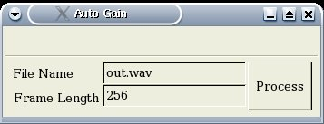
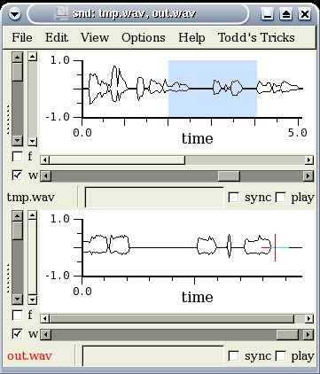

The Snd of SuccessMotivationIt was Wednesday afternoon -- hardly a week to go before my intended date of graduation. The day felt like it was already over when the boss walked in. He had that look. The one that says you're not getting out of here yet. He proceeded to explain what would become my final project in the remaining days before I left the state. I kept nodding my head as I was trying to grasp the requirements. Once all the implications of the project were finally clear, I was left with only one thought running through my mind: "You want me to do what with an audio editor? Go do it yourself." But I just kept nodding my head. After making my protestations clear, I slouched down into my chair and started looking for an audio editor with some type of advanced scripting features. I was almost certain that if it was out there, it would be open source. After all, open source had made me employable. And it had made any number of projects, not just easier, but possible. After browsing for a while, I had found some free software and some expensive software. But there was nothing that seemed to offer the type of flexibility I was looking for. I was getting ready to give my boss the bad news. And then there it was. Snd -- the Emacs of audio. This had to be it. I built the package and started experimenting immediately. Within a few hours I was writing simple extension scheme scripts in Guile, and by the next day I was making Gtk Widgets in that same language. It was very late when I left that night. The package was chock-full of DSP routines. It even had a scheme-coded Fractional FFT! Never did I think I would see lisp and DSP together in the same package. Well I'm not really a scheme hacker. And I didn't know a thing about Gtk. But that didn't stop me from e-mailing my boss screen shots of a nearly completed solution that Friday evening. About SndSnd was designed using the Emacs philosophy of a built-in interpreter. In fact, Snd works very much like Emacs. You can go to the beginning and end of the audio buffer by typing C-a and C-e respectively. Use C-f and C-b to step forward and backwards a sample. Need to open a file? It's C-x f. Kill an audio buffer? C-x k. There are also some Snd specific key bindings like C-x p to play the selection. The press C-t to stop. Or play from the cursor with C-q. And of course you can always create your own bindings. When you open a new file, only the very beginning of the audio is displayed. You can scroll the bottom slider to view more samples. The slider above will keep the number of samples in the window constant but allow you to scroll through the audio. Click on the f box to view the spectrum. You can also scroll through the spectrum. If you open another file, it will display in an attached window, but you can use the notebook option at the command line to get tabbed audio buffers. The scripting ability of Snd is ultimately what enabled me to solve my problem. I was able to write a custom application with a fancy graphical interface. I used Gtk, but you could also use Motif. I found it very easy to begin writing scripts. You simply call your script as a command line parameter to Snd. The only difficulty I had was debugging. If there was any kind of error, the interpreter would just stop evaluating expressions instead of displaying some kind of warning. For anyone who just wants to get started immediately, I'll suggest a few demo and test scripts to take a look at. If you want to learn how to use the Gtk functionality in scheme, take a look at snd-texst.scm. You can find DSP routines in dsp.scm. For more information on developing custom applications, take a look at extsnd.html. There is discussion of using vct for speed increases, hooks, how to make widgets, handling regions and selections, etc. DevelopmentTo demonstrate audio programming in Snd, I've put together a little DSP script in Guile. Guile is an implementation of the scheme programming language. Snd also allows you to write scripts in Ruby. The routine I've implemented is a basic automatic gain control (AGC) algorithm. The idea is to prevent the audio from ever getting too loud or too quiet. This is done by dividing the magnitude of the samples by the average magnitude over short a duration. By default the duration is 256 samples, but I'll show you how to change this later. The following four procedures implement the algorithm. The sum-range procedure recursively sums the samples in the range of samples specified by start and end. The second, div-range!, uses the vct-set! procedure to divide an entire frame of sample values by a single value. I also multiply by .1 for scaling reasons. The zero-range! procedure is used to zero a frame of samples that has low power. This is so AGC doesn't amplify noise or low quality audio. The meat is in process-frames!. It assigns the vector of samples to v and the total length to len. Then it enters a loop, stepping one frame at a time. Each pass through the loop calculates the start and end of the next frame of samples. It stores the summation of the range in sum. Then it compares the sum against a threshold. If the sum is too low, it zeros the range; otherwise, it divides by the sum. The last expression sets the samples to the new values. | ||
;;;Sum over a given range. (define (sum-range v start end) (letrec ((last (abs (vct-ref v end))) (do-sum (lambda (cur) (if (< cur end) (+ (abs (vct-ref v cur)) (do-sum (+ cur 1))) last)))) (do-sum start))) ;;;Divide a frame by denom. ;;;Multiply by a scaling factor to avoid overflow. (define (div-range! v denom start end) (do ((i start (+ i 1))) ((> i end)) (vct-set! v i (* (/ (vct-ref v i) denom) .1)))) ;;;Zero frame. (define (zero-range! v start end) (do ((i start (+ i 1))) ((> i end)) (vct-set! v i 0))) ;;;Loop through file running AGC on each frame. (define (process-frames! frame-len) (let* ((v (samples)) (len (vct-length v))) (do ((i 0 (+ i frame-len))) ((> i len)) (let* ((next (if (> (+ i (- frame-len 1)) len) (- len 1) (+ i (- frame-len 1)))) (sum (sum-range v i next))) (if (< sum (* frame-len .02));don't amplify noise (zero-range! v i next) (div-range! v (/ sum (+ (- next i) 1)) i next)))) (set-samples 0 len v)));save vct back to snd | ||
|
That's it! Now what good would this audio effect be if there's no way
to use it? None. Fortunately, Snd has wrapped scheme around the Gimp
Toolkit (Gtk) widgets. This gives me exactly the type of flexibility
I need to make this a useful application. The usual idiom for
making widgets in C is
| ||
(define todds-menu (add-to-main-menu "Todd's Tricks")) (add-to-menu todds-menu "AGC" (lambda () (AGC-dialog (cadr (main-widgets))))) | ||
|
The next step is to connect the menu to a widget. I've made a dialog and placed some widgets in it. There are a number of boxes to control the layout of the widgets. There's also two labels with text descriptions, two text entry widgets, and a done button. The text entry boxes let you enter a file name for saving the new file and a sample frame size for AGC. There's a sequence of gtk_box_pack_start procedures that I've used to carefully lay out the appearance of the GUI so that it will appear as below. Then the callback handler is made for the done button. It has a procedure to read the text entries and run do-agc. It also hides the main dialog widget. The do-agc procedure saves the current audio selection with the same header type as the original file and 16 bit samples. It then opens the file in another frame, runs the AGC algorithm, and saves back to the file. The remaining code after the callback just displays all the widgets. | ||
(define (AGC-dialog parent) (begin (set! AGC-dialog (gtk_dialog_new)) (gtk_widget_set_size_request AGC-dialog 350 100) (gtk_window_set_title (GTK_WINDOW AGC-dialog) "Auto Gain") (gtk_widget_realize AGC-dialog) ;;;Build widgets (let* ((pane (gtk_hbox_new #f 0)) (pane-entry (gtk_hbox_new #f 0)) (pane-entry1 (gtk_vbox_new #f 0)) (pane-entry2 (gtk_vbox_new #f 0)) (desc-frame (GTK_LABEL (gtk_label_new "Frame Length "))) (desc-file (GTK_LABEL (gtk_label_new "File Name "))) (done (gtk_button_new_with_label "Process")) (file (GTK_EDITABLE (gtk_entry_new))) (frame (GTK_EDITABLE (gtk_entry_new)))) (gtk_editable_insert_text file fname -1) (gtk_editable_insert_text frame flen -1) ;;;Assembly GUI (gtk_box_pack_start (GTK_BOX pane-entry1) (GTK_WIDGET desc-file) #t #t 5) (gtk_box_pack_start (GTK_BOX pane-entry1) (GTK_WIDGET desc-frame) #t #t 5) (gtk_box_pack_start (GTK_BOX pane-entry2) (GTK_WIDGET file) #f #t 0) (gtk_box_pack_start (GTK_BOX pane-entry2) (GTK_WIDGET frame) #f #t 0) (gtk_box_pack_start (GTK_BOX pane-entry) pane-entry1 #f #t 0) (gtk_box_pack_start (GTK_BOX pane-entry) pane-entry2 #f #t 0) (gtk_box_pack_start (GTK_BOX pane) pane-entry #f #t 0) (gtk_box_pack_start (GTK_BOX pane) done #t #t 2) (gtk_box_pack_start (GTK_BOX (.action_area (GTK_DIALOG AGC-dialog))) pane #t #t 0) ;;;Catch process event (g_signal_connect done "clicked" (lambda (w info) (let ((file-name (gtk_entry_get_text (GTK_ENTRY file))) (frame-len (gtk_entry_get_text (GTK_ENTRY frame)))) (gtk_widget_hide AGC-dialog) (do-agc file-name frame-len)))) ;;;Display widgets (gtk_widget_show pane) (gtk_widget_show pane-entry) (gtk_widget_show pane-entry1) (gtk_widget_show pane-entry2) (gtk_widget_show done) (gtk_widget_show (GTK_WIDGET desc-file)) (gtk_widget_show (GTK_WIDGET desc-frame)) (gtk_widget_show (GTK_WIDGET file)) (gtk_widget_show (GTK_WIDGET frame)))) (gtk_widget_show AGC-dialog)) ;;;Called when AGC menu option is chosen. ;;;Automatically saves file and opens the AGC version in another frame. (define (do-agc file-name frame-len) (begin (save-selection file-name :header-type (header-type) :data-format mus-lshort) (open-sound file-name) (process-frames! (string->number frame-len)) (save-sound))) | ||
|
One other useful trick is to make a keyboard shortcut to the routine. You can use bind-key for this. The following code binds C-x a to the dialog widget just as the menu was tied to it. Now you can highlight a portion of audio that interests you and run the AGC algorithm. It will ask you for a file name and frame size. Then it will save the file and display the results in another window. | ||
;;;Bind C-x a to AGC under Todd's Tricks (bind-key (char->integer #\a) 4 (lambda () "run AGC" (AGC-dialog (cadr (main-widgets)))) #t) | ||
ConclusionIf you need your own custom interface or audio routines, Snd is the way to go. I found that I could start developing in it almost immediately and had created a useful application within a week. In addition to its extreme customizability, it comes with many advanced features built-in or in scripts. Other than a slightly-less-than-professional-looking interface, I can't think of too many reasons to use another editor. You might like to have the source for this article. | ||